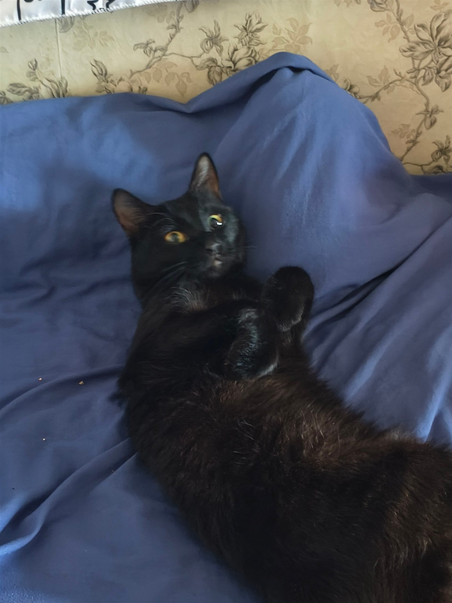
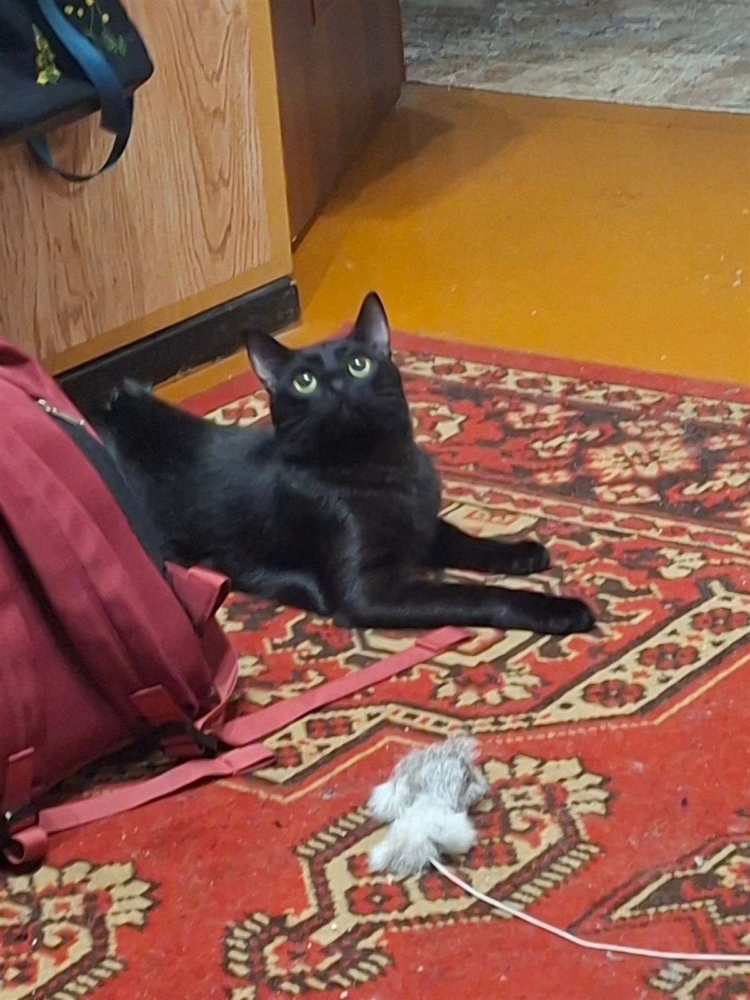

✦ ОФИЦИАЛЬНО ОЧЕНЬ ВАЖНЫЙ КОТ
Его Котейшество
Мяфчик.
Маленький возраст.
Большое влияние.
Мне ещё нет года, но в этом доме уже всё по-моему. Встречайте: чёрная шубка, золотые глаза и ни минуты покоя.
Познакомиться с персоной
01 / ЕГО КОТЕЙШЕСТВО
Величие не ждёт
первого дня рождения.
Некоторые коты просто живут дома. Мяфчик руководит происходящим. Если тихо — пора орать. Если кто-то идёт — пора бросаться на ноги. Если есть дом — по нему нужно носиться.
И всё это с таким лицом, будто именно так и выглядит ответственная работа.
- ВОЗРАСТ
- Ещё нет года
- ДОЛЖНОСТЬ
- Главный по дому
- ДРЕСС-КОД
- Всегда в чёрном
02 / ГОСУДАРСТВЕННОЙ ВАЖНОСТИ
Дел невпроворот.
Плотный график.
И никаких выходных.

Я не лежу.
Я обдумываю стратегию.
- 01СВЯЗИ С ОБЩЕСТВЕННОСТЬЮ
Орать
Доводить свою позицию до всех присутствующих.
- 02СЛУЖБА БЕЗОПАСНОСТИ
Кидаться на ноги
Лично проверять каждого, кто проходит мимо.
- 03ВЫЕЗДНАЯ ПРОВЕРКА
Носиться по дому
Инспектировать владения. На максимальной скорости.
- 04ПРИЁМ НА ВЫСШЕМ УРОВНЕ
Кушать
У важной персоны должен быть хороший обед.
- 05ЗАКРЫТОЕ ЗАСЕДАНИЕ
Какать
Некоторые государственные дела — строго личные.

03 / ОСОБАЯ ПРИВИЛЕГИЯ
Любимая вещь.
Сделана своими.
Самодельная вышитая игрушка, привязанная к палочке. Самая любимая. Потому что для счастья Мяфчику нужны не драгоценности, а чтобы на другом конце палочки был свой человек.
РУЧНАЯ РАБОТА. КОШАЧЬЕ ОДОБРЕНИЕ.04 / ЛИЧНЫЙ АРХИВ
Персона во всех лицах.
Каждый ракурс — официальный.
Даже вот этот.
Можете восхищаться.
Я пока пойду поем.